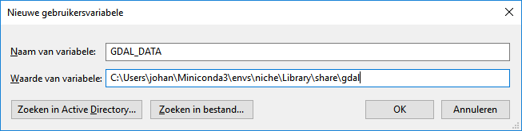

Frequently Asked Questions
This page lists a few known problems that may occur during the installation or usage of niche_vlaanderen, and workarounds for them.
If your issue is not mentioned in this list, please search for the issues on our issuetracker, and file a new issue if it is needed.
Warnings and exceptions in jupyter notebook
Warnings don’t interrupt the model but should draw your attention to possible problems. Standard warnings appear in jupyter notebook as black text in a red box, while warnings specific to niche_vlaanderen are displayed as black text messages on a white background.
The example below (specific to niche_vlaanderen) indicates that some cells have a mean lowest groundwater level higher than the mean highest groundwater level, which is unexpected.

Errors detected during execution are called exceptions and are causing the model to stop. The last line of the error message indicates what happened. The parser repeats the offending section and displays a little ‘arrow’ pointing at the earliest point in the line where the error was detected.
In the example below, the input layer “grntbodem” cannot be found at the indicated location of the computer, causing the model to stop.
{kind=link}
You will mostly be able to find out what the problem is by checking the error message:
RasterioIOError: ./Inputs_2018/BT_2014/grntbodem: No such file or directory
… and/or the line marked by an arrow:
RasterioIOError Traceback (most recent call last)
<ipython-input-3-1f2c0d05e587> in <module>()
2 simple.set_input("mhw", path + "grnghg_bt")
3 simple.set_input("mlw", path + "grnglg_bt")
----> 4 simple.set_input("soil_code",path + "grntbodem")
Missing gcs.csv file
If you see the following issue:
ERROR:rasterio._gdal:CPLE_OpenFailed in b'Unable to open EPSG support file gcs.csv.
Try setting the GDAL_DATA environment variable to point to the
directory containing EPSG csv files.'
This is a known issue of rasterio in conda. As a workaround, from the anaconda
prompt, try setting the GDAL_DATA environment to a path which contains a
gcs.csv file (use search to find a path).
set GDAL_DATA=C:\Users\johan\Miniconda3\pkgs\gdal-2.1.3-py36_vc14_7\Library\share\gdal\gcs.csv
And then start python, niche (command line) or jupyter notebook.
set GDAL_DATA=C:\Users\johan\Miniconda3\pkgs\gdal-2.1.3-py36_vc14_7\Library\share\gdal\gcs.csv
jupyter notebook
You can also set the environment variable in Windows itself. In that case, it is no longer needed to run the set GDAL_DATA= … command. To do this, follow these steps:
right click the my computer icon in windows. And choose the last option “properties”.

On the left, choose the lower option (“advanced properties”)

In the next dialog, make sure you select the “advanced” tab. On the button right there should be a button with “Environment Variables” (“Omgevingsvariabelen”).

In the next dialog, Add a new user variable (if you are admin, you can add a system variable, that way the configuration will apply to all users of the computer).


Add the name “GDAL_DATA” and the path to a place where the gcs.csv file can be found (Use search to find it). Don’t include the filename.
Anaconda prompt must be restarted to find the variable.
{kind=link}
Using ESRI grids without sta.adf
Traceback (most recent call last):
File "<stdin>", line 1, in <module>
File "/home/johan/_proj/niche/niche_vlaanderen/niche_vlaanderen/niche.py", line 192, in set_input
with rasterio.open(value) as dst:
File "/home/johan/.local/lib/python3.5/site-packages/rasterio/__init__.py", line 193, in open
s.start()
File "rasterio/_base.pyx", line 76, in rasterio._base.DatasetReader.start (rasterio/_base.c:2969)
rasterio.errors.RasterioIOError: 'bodemveen' not recognized as a supported file format.
In general ESRI grids can be opened by specifying the directory of the files or by choosing one of the *.ADF files in the directory. However if the ‘sta.adf’ file is missing, the file can not be opened in niche (it will also fail in QGis or other gdal-based applications). In that case, try exporting the grid to a geotiff from arcgis. This format is best supported by the library we use for raster analysis.